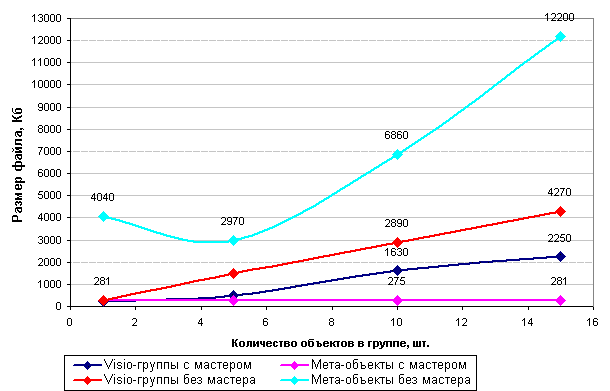
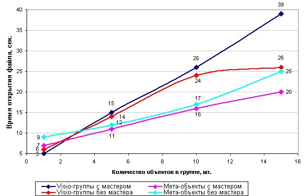

Способы оптимизации фигур в Visio.
 При работе с большими схемами, особенно при использовании большого количества составных объектов, иногда начинается замедление в работе приложения и быстрого увеличения размера файла. Конечно, это не критично, при наличии большого объема жесткого диска, но что делать, если файл надо переслать по почте и вообще, только так и работаете. Тут лишний мегабайт не нужен. И работать с таким приложением становится не комфортно.
При работе с большими схемами, особенно при использовании большого количества составных объектов, иногда начинается замедление в работе приложения и быстрого увеличения размера файла. Конечно, это не критично, при наличии большого объема жесткого диска, но что делать, если файл надо переслать по почте и вообще, только так и работаете. Тут лишний мегабайт не нужен. И работать с таким приложением становится не комфортно.
Visio - объекты, это чаще всего, векторные объекты, каждый из которых носит с собой чемодан со своими настройками. И если взять отдельную группу, то багаж у этой группы будет не маленький. Так может в некоторых случаях будет лучше заменить эту группу одним векторный метафайлом? Но ведь тогда он будет лишен возможностей по редактированию и функциональности. Некоторые фигуры, расположенные на чертеже, вообще не подвергаются редактированию, но если “разобрать” эти фигуры на составляющие, то можно заметить много перекрытий и невидимых областей, а Visio, в силу своей специфики, все равно обрисовывает и обрабатывает все эти невидимые области, затрачивая машинное время. Конечно, можно всегда сказать, что на быстрых машинах этого не происходит, но это не так.
В отличие от других приложений (AutoCAD, CorelDraw), Visio критичен к количеству начерченных фигур и при их значительном увеличении, начинает “притормаживать” и это происходит не на 100 000 объектах, а гораздо раньше.
Рассмотрим пример.
Создадим несколько файлов содержащих 1 600 объектов:
- Файл с объектом, состоящим из Visio-группы без использования мастера. Т.е. просто 1 600 простых фигур (в качестве простой фигуры выступает квадрат с градиентной заливкой, размерами 10х10 мм).
- Файл с объектом, состоящим из Visio-группы при использования мастера. Т.е. 1 локальный мастер и 1 600 связанным с ним фигур.
- Файл с объектом, взятый из первого пункта и вставленный как метафайл. Т.е. 1 600 отдельных метафайлов.
- Файл с объектом, взятый из первого пункта и вставленный как метафайл и использованный в качестве мастера. Т.е. 1 локальный мастер и 1 600 его метафайлов.
Далее производятся все действия с увеличением фигур в Visio-группе и записывались изменения размера файла. Также замерялось время открытия файла. Замер производился после 3-го запуска файла, чтобы он был в памяти.

Как видно из графика, при возрастании объектов в группе, размер файла с Visio-объектами начинает быстро возрастать, в то время как размер с метафайлами практически не изменился (рассматривая файлы с мастерами). Это связано с тем, что при преобразовании фигуры в метафайл, у него “отрезаются” перекрывающиеся области. И поэтому его размер практически не зависит от содержания. А в Visio-группе возникают перекрытия областей.
Если рассматривать файлы без использования мастера, то использование большого количества метафайлов только увеличит размер конечного файла.
Теперь рассмотрим влияние использования метафайлов на работу приложения.

При малых количествах объектов, как Visio, так и метафайлов, производительность не изменяется. Только при работе с более 16 000 объектов становится очевидным разрыв.
Разработчики, для ускорения работы приложения, часто в трафаретах тоже используют метафайлы. Почти все фигуры в Network Device, Internet Symbols, Telecom – это трафареты с векторными фигурами. Но иногда они просто покупают их в таком виде.
Также не забывайте удалять ненужные мастера из локального трафарета. Если мастер имеет связные фигуры на чертеже, то при его удалении появится предупреждение. Если нет, то это значит, что у мастера не было связных фигур, и он не использовался и, следовательно, увеличивал размер файла.
Использование векторных метафайлов не панацея, только в некоторых случаях это может принести ощутимую пользу. Иногда замедление в работе приложения может быть связано с использованием не Visio трафаретов. Ведь можно использовать разные источники, для получения векторных фигур: векторные ClipArt’s (коллекции векторных картинок), из pdf-документов, путем предварительного преобразования, из fla-коллекций. И почти всегда в них слишком много точек или объектов. В таком виде они обычно не используются. Их надо разгруппировать, этим преобразовав в Visio объекты, “почистить”, удалить лишние объекты, сгруппировать или преобразовать в метафайл. Иногда, таким образом, можно увеличить скорость обработки таких объектов на порядок.
Советы по работе с программой.